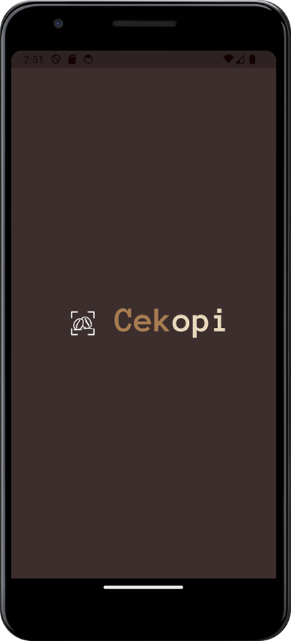
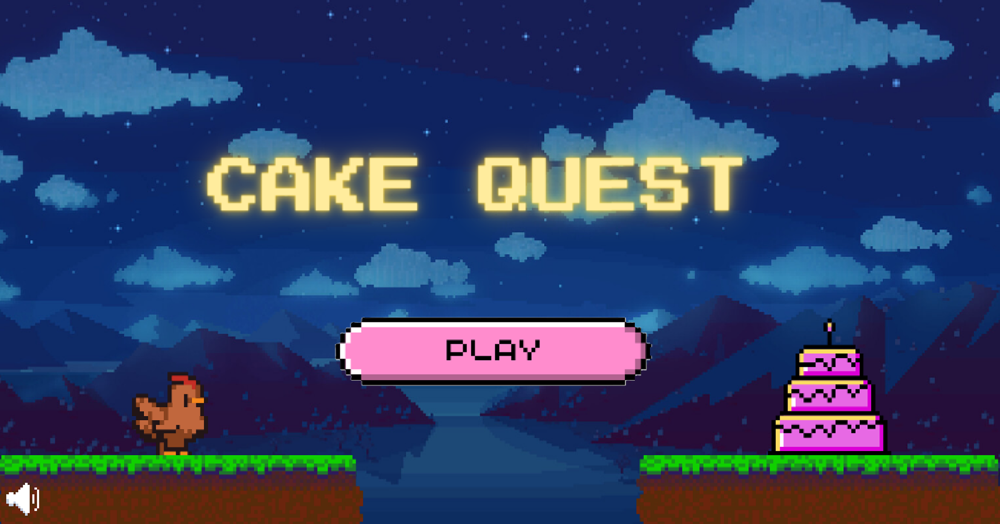
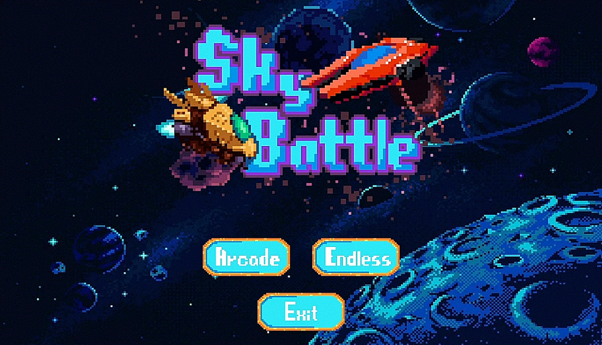
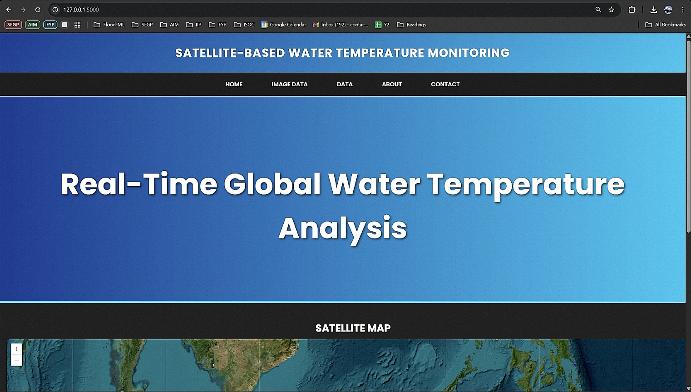
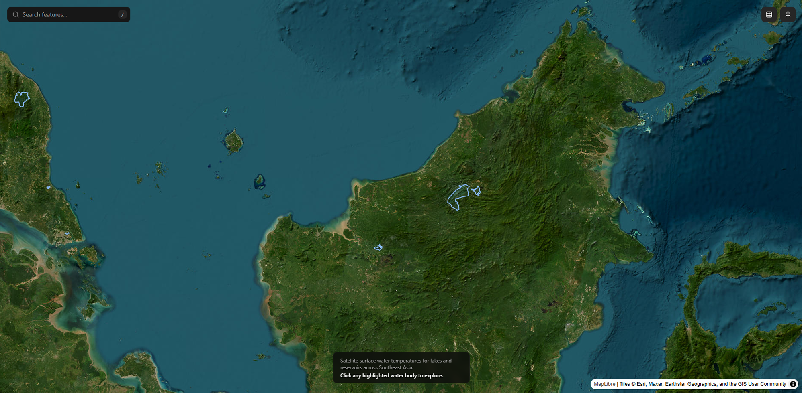
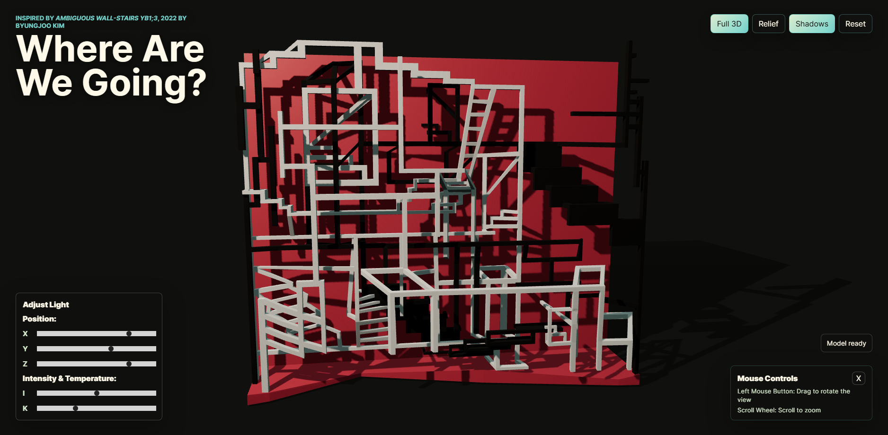

hi! I'm
Jephtha Tandri
I build things :)Jephtha Tandri
Software Engineer | Computer Science & AI Graduate 2026

Always looking to work on another project that hasn't been made yet. A fresh graduate of the University of Nottingham with a Bachelors in Computer Science + AI, I have a particular interest in Machine Learning & Computer Vision applications.
I'm currently looking for graduate roles and opportunities in full-stack development, backend, or ML/AI engineering where I can contribute to products that actually make an impact.
Always happy to connect with people working on interesting problems.

Espresso Extraction is a naturally finnicky process with a rich visual landscape of features to be extracted and analysed, here i have built an experimental system to analyse and predict espresso quality off of the output stream of a naked portafilters, improving espresso prep workflow and creating useful data for researchers

Full Mobile Pipeline




A Java LibGDX Platformer Game
Cake Quest was a small project done with a small team of developers within my first year of University to create a simple platformer game focused on timing-based gameplay with level progression, collisions and animated sprites and environments using Java's LibGDX library.

A Fork of the Classic Game 1942
Sky Battle is an improved fork of the game '1942' with added features and systems, centred around improved enemy behaviour, projectile combat, and escalating encounter design. Adding to the arcade feel of the original game, power-up items and different enemy types was added as well as a final boss fight for difficulty progression.

This project is a web-based analysis system designed to automate the retrieval and processing of satellite-based water temperature data from sources such as MODIS and EcoStress. The system combines Python backend automation, API-based satellite data retrieval, and an interactive UI to simplify environmental monitoring workflows.

Further work on this project has since been very gracefully handled by my colleague Maxim Skobun who had taken over this project since my team's handover of this prototype to the client in mid 2025. I am very thankful to Maxim for further development of this project and his work can be seen in the link below.

This project was a byproduct of me learning Three.JS and Blender when I dabbled in 3D modelling. The piece itself was heavily inspired by ByungJoo Kim's 2022 piece "Ambiguous Wall-Stairs". The project was created as an interactive digital art piece that was an optical illusion of depth, size, shape and colour.